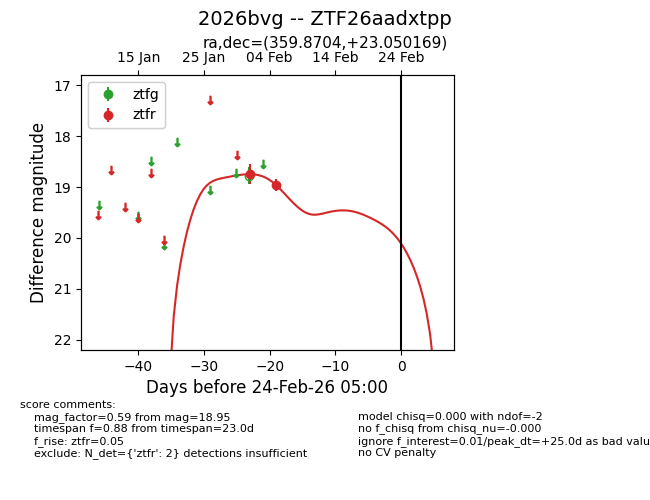
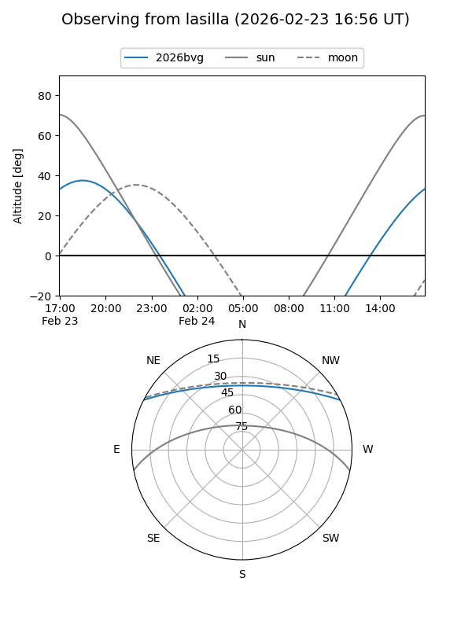
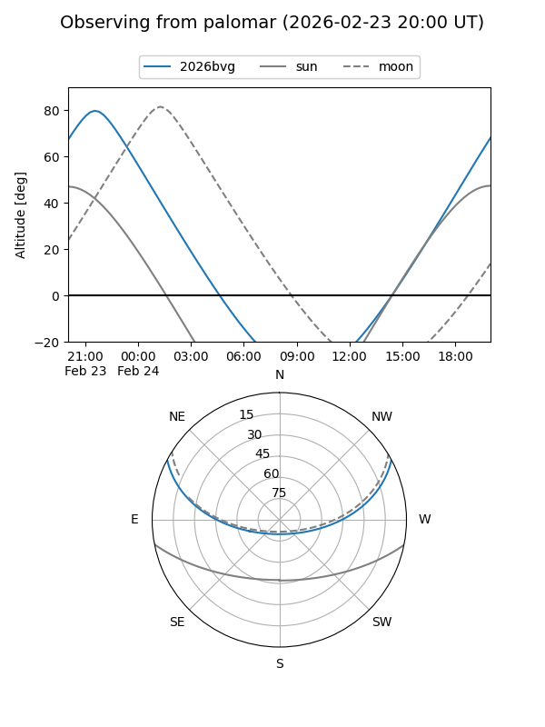

2026bvg
Target 2026bvg at 2026-02-24 09:08
Aliases and brokers:
FINK: link
Lasair: link
ALeRCE: link
TNS: link
YSE: link
alt names
ZTF26aadxtpp (ztf,fink_ztf)
2026bvg (tns,yse)
Coordinates:
equatorial (ra, dec) = 359.8704,+23.05017
equatorial (HMS+DMS) = 23:59:28.89,+23:03:00.61
galactic (l, b) = (107.6569,-38.27561)
Flags:
Photometry:
last ztfr=18.95
2 ztfr detections
Lightcurve

Visibility


Additional plots